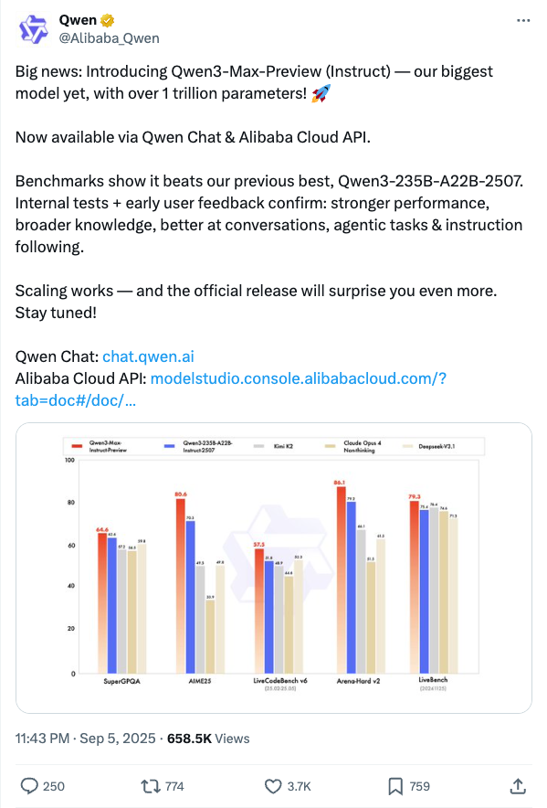
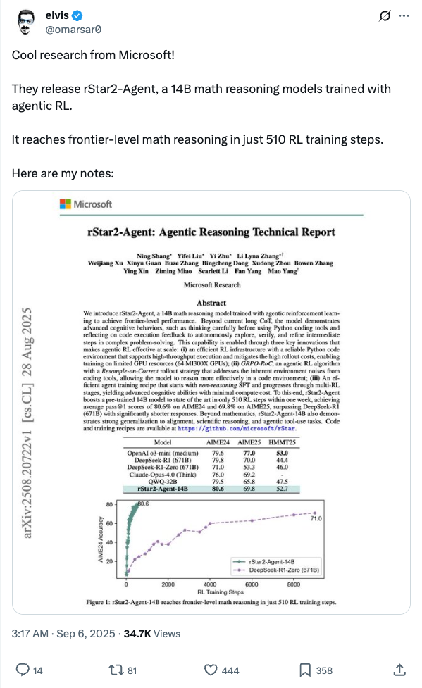
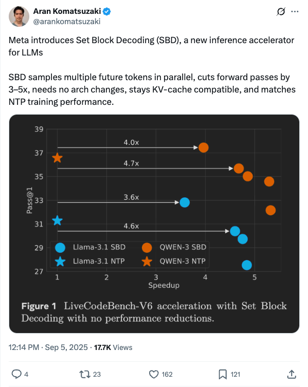
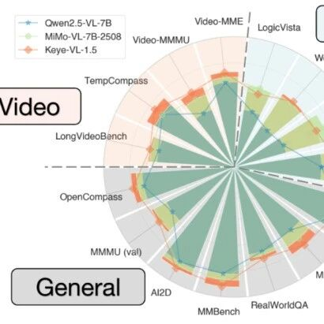
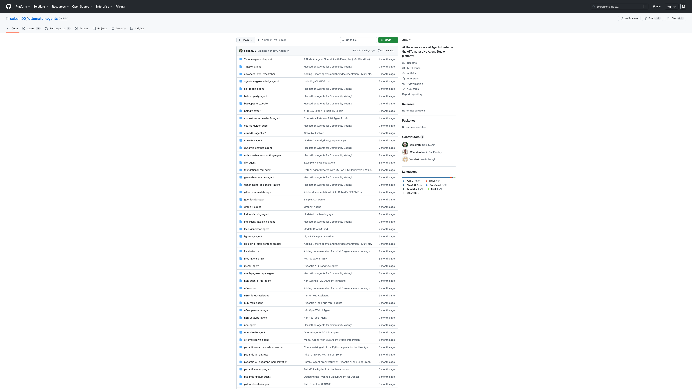

Twitter
Alibaba_Qwen_Launches Trillion-Parameter Qwen3-Max-Preview Large Model
Published: 2025-09-05T15:43:58.000Z

Alibaba's Qwen team has announced the release of their largest model to date, Qwen3-Max-Preview (Instruct), featuring over 1 trillion parameters. This groundbreaking new model is now readily accessible via Qwen Chat and Alibaba Cloud API, marking a significant milestone. Internal tests and early user feedback consistently confirm that Qwen3-Max-Preview substantially outperforms its predecessor, Qwen3-235B, across various critical metrics. These improvements include enhanced overall performance, broader knowledge acquisition, superior conversational abilities, more effective handling of agentic tasks, and precise instruction following, collectively demonstrating remarkable advancements in large language model capabilities.
Kimi_Moonshot_Kimi K2-0905 Update: Enhanced Coding and Long Context
Published: 2025-09-05T03:13:40.000Z

Kimi.ai announced the Kimi K2-0905 model update, featuring significantly enhanced coding capabilities, particularly for front-end development and tool-calling. The model's context length has been extended to 256k tokens, and its integration with various agent scaffolds has been improved. Additionally, a Turbo API is available, offering 60-100 TPS and guaranteed 100% tool-call accuracy for advanced applications.
karpathy_Praises OpenAI's GPT-5 Pro for Solving Complex Coding Challenges
Published: 2025-09-05T17:38:51.000Z

Renowned AI expert Andrej Karpathy tweeted praise for OpenAI's 'GPT-5 Pro' model, highlighting its exceptional capability in solving complex programming challenges. He noted that a problem he struggled with for an hour using another tool ('CC') was resolved by GPT-5 Pro in just ten minutes, providing ready-to-use code. This experience underscores the significant advancements made by OpenAI's next-generation model in code generation and problem-solving, greatly enhancing development efficiency and user experience.
omarsar0_Microsoft Unveils rStar2-Agent: 14B Math Reasoning Model Achieves Frontier Performance in 510 RL Steps
Published: 2025-09-05T19:17:02.000Z

Microsoft's latest research introduces rStar2-Agent, a 14-billion-parameter math reasoning model. This model, trained with agentic Reinforcement Learning (RL), achieves frontier-level math reasoning capabilities in just 510 RL training steps. This advancement highlights the significant potential of efficient RL training in enhancing the reasoning performance of large models, marking a new breakthrough in the field of mathematical and logical reasoning.
arankomatsuzaki_Meta Introduces SBD for LLM Inference Acceleration
Published: 2025-09-05T04:14:28.000Z

Meta has introduced a new inference accelerator called Set Block Decoding (SBD), specifically designed for Large Language Models (LLMs). SBD technology enables parallel sampling of multiple future tokens, reducing forward passes by 3 to 5 times without requiring architectural changes. This innovation is compatible with KV-cache and maintains performance comparable to Next Token Prediction (NTP) training, significantly enhancing LLM inference efficiency.
llama_index_SemTools CLI Agents Enhance Document Search and Analysis
Published: 2025-09-05T16:54:00.000Z

LlamaIndex introduced SemTools, a command-line toolkit for document parsing and semantic search. Tested with coding agents like Claude Code on 1000 ArXiv papers, SemTools demonstrated significant improvements. The research indicates that combining Unix tools with semantic search capabilities creates highly effective knowledge workers, providing more detailed and accurate answers for document analysis tasks. This approach leverages existing Unix tooling, proving CLI access to be a powerful and efficient alternative to custom RAG infrastructure.
wechat
DeepSeek's Next Big Move Revealed: The Future of AI Agents
Published: 2025-09-05T14:01:18.000Z

Insiders reveal that DeepSeek is secretly developing an advanced AI agent model with significant self-evolution capabilities, with the highly anticipated "R2" version projected for release by year-end. This follows DeepSeek-V3.1's recent update, which already demonstrated substantial improvements in tool utilization and complex agent tasks, showcasing comprehensive performance gains in both programming and search agent evaluations. The forthcoming "R2" model is designed to execute intricate operations with minimal user prompts and continuously learn from historical actions, enabling greater autonomy. This strategic move marks a crucial and ambitious step for DeepSeek in the burgeoning AI agent domain, poised to lead new industry trends and potentially democratize access by lowering the cost barrier for sophisticated agent technology. This development firmly signals a continued and intensified industry focus on AI agent advancements within the large language model landscape throughout 2025, promising further innovation.
Kuaishou Keye-VL-1.5 Unveiled: Slow-Fast Dual-Track Encoding and 128K Context for a New Era of Visual Language
Published: 2025-09-05T14:01:18.000Z

The Kuaishou Keye-VL-1.5 model introduces an innovative slow-fast dual-track video encoding strategy and a progressive four-stage pre-training approach, effectively addressing the fundamental challenge of balancing spatial resolution and temporal coverage in video understanding. This advanced model extends its context length to an impressive 128K tokens, enabling it to process longer videos and more complex visual content. Furthermore, it incorporates a sophisticated post-training pipeline specifically designed to enhance inference capabilities and align with human preferences, thereby significantly improving complex video understanding and reasoning. Keye-VL-1.5 demonstrates outstanding performance in public benchmarks, achieving notable breakthroughs in video understanding tasks while simultaneously maintaining strong competitiveness in general multimodal benchmarks. This comprehensive research offers a practical and robust solution for developing next-generation multimodal models capable of sophisticated video comprehension and advanced reasoning.
Stanford's Latest: Qwen2.5-3B, Capable of 'Deliberate Practice', Outperforms Claude3.5
Published: 2025-09-05T13:55:21.000Z

A recent Stanford University study addresses two significant challenges in Reinforcement Learning (RL) for Machine Learning Engineering (MLE) tasks: learning bias caused by variable-duration actions and sparse reward signals. To overcome these, the research team introduced innovative solutions: "Duration-Aware Gradient Updates" and "Environment Detection" mechanisms, which significantly optimize the RL training process. Experimental results demonstrate that the Qwen2.5-3B model, with only 3 billion parameters, after RL training, surpassed the prompt-dependent Claude3.5-Sonnet in 8 out of 12 Kaggle MLE tasks, achieving an average performance improvement of 22%. Furthermore, it outperformed GPT-4o in most tasks. This research highlights the critical importance of continuous learning and iterative optimization, demonstrating that smaller models possess the potential to surpass larger, static models in complex AI tasks, offering significant insights for AI Agent development.
Long Video Generation Can Now Look Back! Oxford Proposes "Memory Stabilization" for 12x Speedup
Published: 2025-09-05T05:37:56.000Z

Researchers from Oxford University have introduced VMem (Surfel-Indexed View Memory), a novel approach designed to address the challenges of inconsistency and high computational costs in long video generation. VMem tackles these issues by explicitly recording "what has been seen" into geometric surfels. Instead of relying solely on recent frames, it leverages geometric visibility to retrieve the most relevant historical views as context for subsequent generation. This method significantly enhances consistency in long-sequence video generation, particularly excelling in loop-trajectory evaluations. Furthermore, VMem drastically reduces computational overhead, achieving up to a 12-fold increase in inference speed. As an explicit, interpretable external memory mechanism, VMem offers an efficient and stable solution for long video generation, capable of being plug-and-play integrated into existing backbone networks.
Nvidia Acquires AI Coding Startup Solver
Published: 2025-09-05T01:47:01.000Z
Nvidia has recently acquired Solver, an AI coding startup specializing in developing AI Agents capable of managing entire codebases, moving beyond mere code auto-completion. This acquisition is a pivotal step in Nvidia's broader strategy to build a comprehensive software ecosystem around its leading AI hardware, aiming to reduce chip utilization costs and deepen its footprint in the rapidly evolving AI software market. Solver's technology, founded by veterans including a Siri co-founder, signals a future where AI collaborators are more deeply integrated into core software development processes. This move is expected to shorten development cycles on Nvidia's platforms and signifies a continuation of Nvidia's "AI acquisition spree," further expanding its business scope from chips and data tools to advanced AI agents.
Breaking the Embodied AI "Expert Dilemma"! Peking University's New Method Enables Unitree G1 to Master Dancing and Cartwheels with a Single Framework
Published: 2025-09-05T01:47:01.000Z
Peking University and BeingBeyond team have jointly developed the innovative BumbleBee system, featuring a "divide-refine-fuse" three-level architecture. This groundbreaking approach is the first to effectively address the long-standing "expert dilemma" in traditional humanoid robot control, which suffers from over-reliance on specific expert strategies and limited generalization capabilities. BumbleBee successfully bridges the gap from optimized expert policies to versatile whole-body control within a single, unified framework. This enables humanoid robots, exemplified by the Unitree G1, to fluidly execute a wide range of complex and diverse actions, including intricate dance routines and dynamic cartwheels. Comprehensive evaluations in both simulation environments (IsaacGym, MuJoCo) and on the physical Unitree G1 platform consistently demonstrate BumbleBee's superior performance in terms of task success rate and overall stability compared to existing baseline methods. This research presents a highly efficient and generalizable new paradigm, significantly advancing the field of universal embodied artificial intelligence control.
GitHub
Finally, LLM agents that actually follow instructions
Published: 2025-09-08T05:17:02Z

Parlant is an innovative AI agent framework designed to address the critical challenge of ensuring Large Language Models (LLMs) consistently follow instructions and maintain predictable behavior. Unlike traditional prompt engineering, Parlant enables developers to define explicit behavioral guidelines, integrate external tools, adapt to specific domains, and utilize canned responses, guaranteeing reliable agent performance. Key features include conversational journeys, dynamic guideline matching, robust tool integration, and comprehensive explainability, allowing deep insights into agent decisions. This framework is ideal for building production-ready, customer-facing AI agents across diverse sectors such as financial services, healthcare, e-commerce, and legal tech, where compliance, consistency, and reliability are paramount. Parlant empowers businesses to deploy AI agents that behave exactly as required, minimizing hallucinations and maximizing operational efficiency.
What is the Live Agent Studio?
Published: 2025-09-03T23:14:34Z

The Live Agent Studio, developed by oTTomator, is a community-driven platform dedicated to exploring and implementing cutting-edge AI agents. All agents featured on the platform are open source, with their complete source code and workflow JSON files readily available in the associated GitHub repository, fostering transparency and collaborative learning. This initiative aims to establish the studio as a central hub for the latest advancements in AI agent technology, groundbreaking research, and essential development tools, ensuring users stay at the forefront of AI innovation. Users can access and utilize these powerful agents through a token-based system, which covers the underlying large language model usage costs, with initial free tokens provided to encourage exploration. Beyond its practical utility, the platform serves as a comprehensive educational resource for learning AI applications and mastering the process of building sophisticated agents, thereby fostering collaborative learning and continuous development within the broader AI community.
üöÄ Kilo Code
Published: 2025-09-05T22:38:14Z

Kilo Code is an open-source VS Code AI agent designed to enhance development efficiency by generating code from natural language, automating tasks, and refactoring code. It integrates the latest AI models such as Gemini 2.5 Pro, Claude 4, and GPT-5, with optional API key usage. The project incorporates features from other open-source projects like Roo Code and Cline, offering multi-mode workflows (e.g., Architect, Coder, Debugger) and an MCP Server Marketplace to extend capabilities. Kilo Code aims to provide developers with an adaptable and feature-rich AI coding assistant, streamlining the development process.
bitnet.cpp
Published: 2025-06-03T06:14:20Z

bitnet.cpp is the official inference framework from Microsoft for 1-bit Large Language Models (LLMs) like BitNet b1.58. It provides a suite of optimized kernels that enable fast and lossless inference of 1.58-bit models on both CPUs and GPUs. The framework achieves significant speedups, ranging from 1.37x to 5.07x on ARM CPUs and 2.37x to 6.17x on x86 CPUs, while also substantially reducing energy consumption. Notably, bitnet.cpp can run a 100B BitNet b1.58 model on a single CPU at speeds comparable to human reading, greatly enhancing the potential for deploying LLMs on local devices and marking a significant advancement in edge AI inference.
Pathway AI Pipelines
Published: 2025-07-30T12:13:38Z

Pathway AI Pipelines provide a robust and efficient solution for rapidly deploying AI applications, specializing in high-accuracy Retrieval-Augmented Generation (RAG) and scalable enterprise AI search. These pipelines leverage the most current knowledge from various data sources, offering ready-to-use Large Language Model (LLM) App Templates that can be deployed on-cloud or on-premises. They seamlessly connect and synchronize with diverse data sources, including file systems, Google Drive, Sharepoint, S3, and Kafka, handling all data additions, deletions, and updates in real-time. A key feature is the built-in data indexing, enabling lightning-fast vector, hybrid, and full-text search capabilities, all managed in-memory with caching, thus eliminating external infrastructure dependencies. This comprehensive approach significantly simplifies the development and deployment of sophisticated AI applications, particularly for managing and querying vast document collections with continuously updated information.
XLeRobot ü§ñ
Published: 2025-09-08T00:37:42Z

XLeRobot is an innovative open-source, low-cost embodied AI robotics project designed to make advanced embodied AI technology accessible to a broader audience. This initiative presents a practical dual-arm mobile robot that boasts an impressive affordability, costing less than an iPhone, and remarkable ease of assembly, requiring under 4 hours. With a starting price of approximately $660, XLeRobot leverages foundational work from projects like LeRobot, SO-100, and Lekiwi. It features versatile control options, including keyboard, Xbox controller, and Switch Joy-Con, enabling intuitive interaction. The project is comprehensively supported by detailed documentation, a robust simulation environment, and clear hardware assembly guides, positioning it as an ideal platform for both practical household automation and cutting-edge robotics research.
huggingface
Delta Activations: A Representation for Finetuned Large Language Models
Published: 2025-09-04T17:59:06.000Z

The success of powerful open source Large Language Models (LLMs) has enabled
the community to create a vast collection of post-trained models adapted to
specific tasks and domains. However, navigating and understanding these models
remains challenging due to inconsistent metadata and unstructured repositories.
We introduce Delta Activations, a method to represent finetuned models as
vector embeddings by measuring shifts in their internal activations relative to
a base model. This representation allows for effective clustering by domain and
task, revealing structure in the model landscape. Delta Activations also
demonstrate desirable properties: it is robust across finetuning settings and
exhibits an additive property when finetuning datasets are mixed. In addition,
we show that Delta Activations can embed tasks via few-shot finetuning, and
further explore its use for model selection and merging. We hope Delta
Activations can facilitate the practice of reusing publicly available models.
Code is available at https://github.com/OscarXZQ/delta_activations.
Durian: Dual Reference-guided Portrait Animation with Attribute Transfer
Published: 2025-09-04T17:53:03.000Z

We present Durian, the first method for generating portrait animation videos
with facial attribute transfer from a given reference image to a target
portrait in a zero-shot manner. To enable high-fidelity and spatially
consistent attribute transfer across frames, we introduce dual reference
networks that inject spatial features from both the portrait and attribute
images into the denoising process of a diffusion model. We train the model
using a self-reconstruction formulation, where two frames are sampled from the
same portrait video: one is treated as the attribute reference and the other as
the target portrait, and the remaining frames are reconstructed conditioned on
these inputs and their corresponding masks. To support the transfer of
attributes with varying spatial extent, we propose a mask expansion strategy
using keypoint-conditioned image generation for training. In addition, we
further augment the attribute and portrait images with spatial and
appearance-level transformations to improve robustness to positional
misalignment between them. These strategies allow the model to effectively
generalize across diverse attributes and in-the-wild reference combinations,
despite being trained without explicit triplet supervision. Durian achieves
state-of-the-art performance on portrait animation with attribute transfer, and
notably, its dual reference design enables multi-attribute composition in a
single generation pass without additional training.
Towards a Unified View of Large Language Model Post-Training
Published: 2025-09-04T17:40:33.000Z

Two major sources of training data exist for post-training modern language
models: online (model-generated rollouts) data, and offline (human or
other-model demonstrations) data. These two types of data are typically used by
approaches like Reinforcement Learning (RL) and Supervised Fine-Tuning (SFT),
respectively. In this paper, we show that these approaches are not in
contradiction, but are instances of a single optimization process. We derive a
Unified Policy Gradient Estimator, and present the calculations of a wide
spectrum of post-training approaches as the gradient of a common objective
under different data distribution assumptions and various bias-variance
tradeoffs. The gradient estimator is constructed with four interchangeable
parts: stabilization mask, reference policy denominator, advantage estimate,
and likelihood gradient. Motivated by our theoretical findings, we propose
Hybrid Post-Training (HPT), an algorithm that dynamically selects different
training signals. HPT is designed to yield both effective exploitation of
demonstration and stable exploration without sacrificing learned reasoning
patterns. We provide extensive experiments and ablation studies to verify the
effectiveness of our unified theoretical framework and HPT. Across six
mathematical reasoning benchmarks and two out-of-distribution suites, HPT
consistently surpasses strong baselines across models of varying scales and
families.
Few-step Flow for 3D Generation via Marginal-Data Transport Distillation
Published: 2025-09-04T17:24:31.000Z

Flow-based 3D generation models typically require dozens of sampling steps
during inference. Though few-step distillation methods, particularly
Consistency Models (CMs), have achieved substantial advancements in
accelerating 2D diffusion models, they remain under-explored for more complex
3D generation tasks. In this study, we propose a novel framework, MDT-dist, for
few-step 3D flow distillation. Our approach is built upon a primary objective:
distilling the pretrained model to learn the Marginal-Data Transport. Directly
learning this objective needs to integrate the velocity fields, while this
integral is intractable to be implemented. Therefore, we propose two
optimizable objectives, Velocity Matching (VM) and Velocity Distillation (VD),
to equivalently convert the optimization target from the transport level to the
velocity and the distribution level respectively. Velocity Matching (VM) learns
to stably match the velocity fields between the student and the teacher, but
inevitably provides biased gradient estimates. Velocity Distillation (VD)
further enhances the optimization process by leveraging the learned velocity
fields to perform probability density distillation. When evaluated on the
pioneer 3D generation framework TRELLIS, our method reduces sampling steps of
each flow transformer from 25 to 1 or 2, achieving 0.68s (1 step x 2) and 0.94s
(2 steps x 2) latency with 9.0x and 6.5x speedup on A800, while preserving high
visual and geometric fidelity. Extensive experiments demonstrate that our
method significantly outperforms existing CM distillation methods, and enables
TRELLIS to achieve superior performance in few-step 3D generation.
Loong: Synthesize Long Chain-of-Thoughts at Scale through Verifiers
Published: 2025-09-03T06:42:40.000Z

Recent advances in Large Language Models (LLMs) have shown that their
reasoning capabilities can be significantly improved through Reinforcement
Learning with Verifiable Reward (RLVR), particularly in domains like
mathematics and programming, where ground-truth correctness can be
automatically evaluated. However, extending this success to other
reasoning-intensive domains remains challenging due to the scarcity of
high-quality, verifiable datasets and the high cost of human supervision. In
this work, we introduce the Loong Project: an open-source framework for
scalable synthetic data generation and verification across a diverse range of
reasoning-intensive domains. The framework consists of two key components: (1)
LoongBench, a curated seed dataset containing 8,729 human-vetted examples
across 12 domains (e.g., Advanced Mathematics, Chemistry, Logic), each paired
with executable code and rich metadata; and (2) LoongEnv, a modular synthetic
data generation environment that supports multiple prompting strategies to
produce new question-answer-code triples. Together, these components form an
agent-environment loop that enables reinforcement learning, where an LLM-based
agent is rewarded for generating Chain-of-Thought (CoT) solutions that align
with code-executed answers. Empirically, we benchmark LoongBench on a broad
suite of both open-source and proprietary LLMs to evaluate domain coverage and
reveal performance bottlenecks. In addition, we conduct a comprehensive
analysis of synthetic data generated by LoongEnv, examining correctness,
difficulty, and diversity. Code and documentation are available at
https://github.com/camel-ai/loong.
DeepResearch Arena: The First Exam of LLMs' Research Abilities via
Seminar-Grounded Tasks
Published: 2025-09-01T11:42:47.000Z

Deep research agents have attracted growing attention for their potential to
orchestrate multi-stage research workflows, spanning literature synthesis,
methodological design, and empirical verification. Despite these strides,
evaluating their research capability faithfully is rather challenging due to
the difficulty of collecting frontier research questions that genuinely capture
researchers' attention and intellectual curiosity. To address this gap, we
introduce DeepResearch Arena, a benchmark grounded in academic seminars that
capture rich expert discourse and interaction, better reflecting real-world
research environments and reducing the risk of data leakage. To automatically
construct DeepResearch Arena, we propose a Multi-Agent Hierarchical Task
Generation (MAHTG) system that extracts research-worthy inspirations from
seminar transcripts. The MAHTG system further translates research-worthy
inspirations into high-quality research tasks, ensuring the traceability of
research task formulation while filtering noise. With the MAHTG system, we
curate DeepResearch Arena with over 10,000 high-quality research tasks from
over 200 academic seminars, spanning 12 disciplines, such as literature,
history, and science. Our extensive evaluation shows that DeepResearch Arena
presents substantial challenges for current state-of-the-art agents, with clear
performance gaps observed across different models.